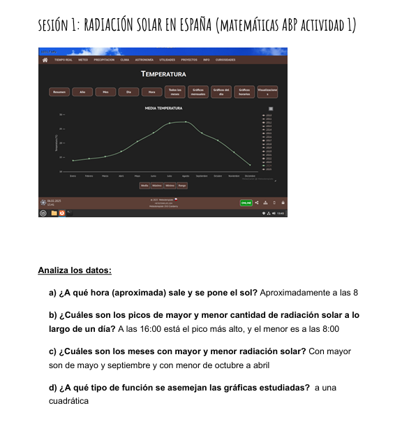

Aparte de la construcción del horno solar y sus pasos previos, hemos hecho en otras asignaturas tareas relacionadas con este proyecto. En matemáticas hemos investigado sobre la radiación solar en España, lo cual está relacionado con que nuestro horno funciona con la radiación del sol. Usamos para la investigación la página web "MeteoCarlet" (enlace en la imagen de la derecha).
